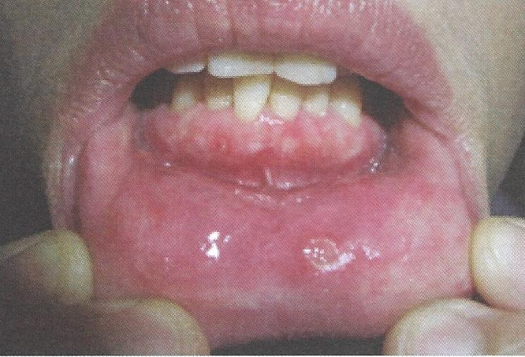

Aphthous ulcers

แผลร้อนใน
เกิดจากความผิดปกติของภูมิคุ้มกัน แผลมีรูปร่างกลมหรือรี ขอบเขตชัดเจนสีแดง ฐานหวำปกคลุมด้วยเนื้อตายสีเหลือง ตำแหน่งแผลพบบริเวณเยื่อเมือกที่มีการเคลื่อนไหว มีอาการปวด แผลมักหายใน 7-14 วัน การรักษาใช้ steroid ทา ควรทาตั้งแต่แผลเกิดขึ้นใหม่และมีขนาดเล็ก